번역 안내. 클래스·스킬·탤런트 이름 등 고유명사는 인게임 검색을 위해 영어 그대로 두었고, 설명만 한글로 옮겼습니다.
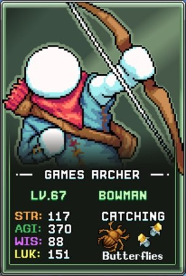
데미지 빌드
Bowman의 주요 데미지 빌드는 SpeeDNA 탤런트를 위한 핵심 이동 속도(Movement Speed) 구간에 도달하는 데 초점을 맞춥니다. 이 탤런트는 이동 속도를 데미지로 변환하며, 물약·조각상 등 다른 이동 속도 원천과 결합하면 사실상 무한한 데미지 성장의 원천이 됩니다.
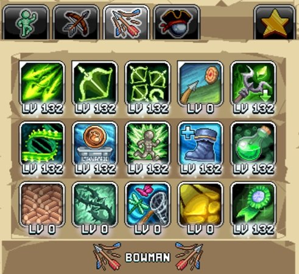
권장 우선순위는 다음과 같습니다.
| 탤런트 | 효과 | 설명 |
|---|---|---|
 Homing Arrows Homing Arrows |
공중으로 화살을 쏘아 몬스터를 추적하며 데미지를 입힘 | 여러 적을 동시에 타격하므로 보스전에 이상적이며, 공격 바에 배정 시 AFK(방치) 수익도 향상됩니다. AFK 수익 혜택을 위해 50포인트를 먼저 투자하고, 다른 탤런트를 모두 올린 후 만레벨로 채우십시오. |
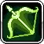 Magic Shortbow |
마법 단궁으로 목표를 향해 데미지를 입힘 | Homing Arrows와 동일한 AFK 혜택을 제공하는 보조 공격 탤런트입니다. 마찬가지로 처음에는 50포인트를 투자한 후 나중에 만레벨로 올리십시오. |
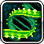 SpeeDNA |
이동 속도 100% 초과분 15%마다 % 데미지 증가 | Bowman의 가장 큰 데미지 원천으로, 계정의 이동 속도 보너스가 늘어날수록 더욱 강력해집니다. |
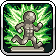 Shwifty Statues |
Speed, Anvil, Ol Reliable 조각상 보너스 % 증가 | 이동 속도 조각상의 혜택을 높여 SpeeDNA를 강화하는 동시에, 모루 속도 조각상을 향상시켜 재료를 더 빠르게 획득할 수 있게 합니다. |
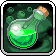 Velocity Vessels |
Archer or Bust 버블 레벨마다 Featherweight의 최대 레벨 증가 | 연금술이 진행되고 첫 번째 초록 버블(Archer or Bust) 레벨이 높아질수록 이 탤런트에 투자하여 탭 1의 Featherweight에서 더 많은 레벨을 얻으십시오. |
| AGI Again | Quickness Boots의 최대 탤런트 레벨 증가 | 민첩(AGI)은 Bowman에게 이동 속도 다음의 보조 데미지 원천이므로, 이동 속도 부스트를 소진한 후 우선순위를 두십시오. |
| Previous Points | Archer 탤런트 탭 포인트 증가 | AGI Again의 혜택을 극대화하기 위해 추가 포인트가 필요할 때 사용하되, 이미 충분한 탤런트 포인트가 있다면 건너뛰십시오. |
 Shoeful Of Obol Shoeful Of Obol |
Obols의 AGI % 증가 | 오볼에서 소폭의 민첩을 제공하는 마지막 직접 데미지 부스트 원천입니다. |
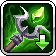 Woah, That Was Fast! |
모든 공격 탤런트 쿨다운 % 감소 | 공격이 더 빨리 재사용 가능해지도록 하는 편의성 탤런트로, 다음 엘리트 클래스인 Siege Breaker로 승급하면 더욱 강력해집니다. Siege Breaker는 Active(직접 플레이)에서 혜택을 받는 다수의 공격 탤런트를 보유하고 있습니다. |
채집(Catching) 빌드
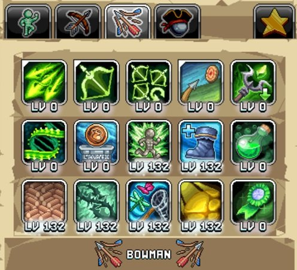
두 번째 프리셋 옵션으로 Bowman은 파리, 나비, 과일 파리 등 다양한 벌레를 잡는 채집 빌드를 사용해야 합니다. 이 빌드는 제련(Smithing) 빌드와 같은 탤런트 프리셋에 배치하고, Elusive Efficiency가 만레벨인지 확인하십시오.
채집 AFK 수익을 위한 Bowman 탤런트 우선순위는 다음과 같습니다.
| 탤런트 | 효과 | 설명 |
|---|---|---|
| Sunset On The Hives | 채집 AFK 수익 % 증가 | 채집 AFK 수익을 높여 벌레 채집에 투자하는 시간의 수익을 향상시킵니다. |
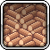 Teleki'net'ic Logs |
보관함의 Oak Logs 10의 거듭제곱마다 채집 효율 % 증가 | 초반 게임에서 Oak Logs를 쉽게 모을 수 있어 큰 어려움 없이 1만 개를 확보할 수 있으며, 이로 인해 화면에 표시되는 채집 효율 수치가 4배가 됩니다. |
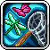 Bug Enthusiast |
채집 경험치 % 증가 | 채집 경험치는 벌레 수확량을 직접 늘리지는 않지만, 더 빠른 경험치로 새로운 채집망을 더 일찍 해금하여 채집 파워에 큰 도약을 가져다줍니다. |
| Shwifty Statues | Speed, Anvil, Ol Reliable 조각상 보너스 % 증가 | Ol Reliable 조각상의 혜택을 높여 채집 파워를 소폭 향상시킵니다. |
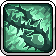 Briar Patch Runner |
민첩이 채집 효율에 미치는 영향 % 증가 | 채집 전용 탤런트 중 효과가 가장 적지만, 성장하는 민첩 수치를 효율로 전환하는 데 여전히 기여합니다. |
| AGI Again | Quickness Boots의 최대 탤런트 레벨 증가 | 민첩이 채집 효율을 높이므로 Bowman 스킬링의 마지막 주요 원천입니다. 이후 남는 포인트는 Shoeful Of Obol이나 필요 시 Previous Points에 투자하십시오. |